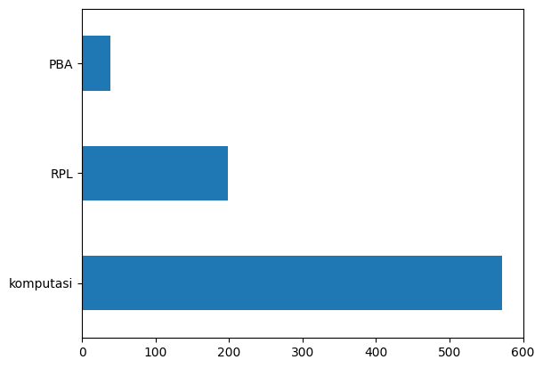

UTS PSD#
Link website PTA Trunojoyo : PTA Trunojoyo
# menghubungkan colab ke drive
from google.colab import drive
drive.mount('/content/drive')
KeyboardInterruptTraceback (most recent call last)
<ipython-input-1-281c927e8bff> in <cell line: 3>()
1 # menghubungkan colab ke drive
2 from google.colab import drive
----> 3 drive.mount('/content/drive')
/usr/local/lib/python3.10/dist-packages/google/colab/drive.py in mount(mountpoint, force_remount, timeout_ms, readonly)
101 def mount(mountpoint, force_remount=False, timeout_ms=120000, readonly=False):
102 """Mount your Google Drive at the specified mountpoint path."""
--> 103 return _mount(
104 mountpoint,
105 force_remount=force_remount,
/usr/local/lib/python3.10/dist-packages/google/colab/drive.py in _mount(mountpoint, force_remount, timeout_ms, ephemeral, readonly)
130 )
131 if ephemeral:
--> 132 _message.blocking_request(
133 'request_auth', request={'authType': 'dfs_ephemeral'}, timeout_sec=None
134 )
/usr/local/lib/python3.10/dist-packages/google/colab/_message.py in blocking_request(request_type, request, timeout_sec, parent)
174 request_type, request, parent=parent, expect_reply=True
175 )
--> 176 return read_reply_from_input(request_id, timeout_sec)
/usr/local/lib/python3.10/dist-packages/google/colab/_message.py in read_reply_from_input(message_id, timeout_sec)
94 reply = _read_next_input_message()
95 if reply == _NOT_READY or not isinstance(reply, dict):
---> 96 time.sleep(0.025)
97 continue
98 if (
KeyboardInterrupt:
Pemrosesan Data#
import numpy as np
import pandas as pd
# read data
df = pd.read_csv("/content/drive/MyDrive/prosaindata/tugas/Tugas/hasil/data_ta.csv")
df
| NPM | Judul | Abstrak | Prodi | Label | |
|---|---|---|---|---|---|
| 0 | 40411100468 | PERANCANGAN DAN IMPLEMENTASI SISTEM DATABASE T... | Sistem informasi akademik (SIAKAD) merupaka... | Teknik Informatika | RPL |
| 1 | 40411100476 | APLIKASI KONTROL DAN MONITORING JARINGAN KOMPU... | Berjalannya koneksi jaringan komputer dengan l... | Teknik Informatika | RPL |
| 2 | 40411100480 | RANCANG BANGUN APLIKASI PROXY SERVER UNTUKENKR... | Web server adalah sebuah perangkat lunak serve... | Teknik Informatika | RPL |
| 3 | 70411100070 | SISTEM PENDUKUNG KEPUTUSAN OPTIMASI PENJADWALA... | Penjadwalan kuliah di Perguruan Tinggi me... | Teknik Informatika | komputasi |
| 4 | 80411100115 | SISTEM AUGMENTED REALITY ANIMASI BENDA BERGERA... | Seiring perkembangan teknologi yang ada diduni... | Teknik Informatika | komputasi |
| ... | ... | ... | ... | ... | ... |
| 848 | 160411100032 | PENERAPAN ALGORITMA LONG-SHORT TERM MEMORY UNT... | Investasi saham selama ini memiliki resiko ker... | Teknik Informatika | komputasi |
| 849 | 160411100182 | SISTEM PENCARIAN TEKS AL-QURAN TERJEMAHAN BERB... | Information Retrieval (IR) merupakan pengambil... | Teknik Informatika | PBA |
| 850 | 160411100077 | KLASIFIKASI KOMPLEKSITAS VISUAL CITRA SAMPAH M... | Klasifikasi citra merupakan proses pengelompok... | Teknik Informatika | komputasi |
| 851 | 160411100084 | IDENTIFIKASI BINER ATRIBUT PEJALAN KAKI MENGGU... | Identifikasi atribut pejalan kaki merupakan sa... | Teknik Informatika | komputasi |
| 852 | 160411100044 | DETEKSI OBJEK MANUSIA BERBASIS ONE STAGE DETEC... | Topik deteksi objek telah menarik perhatian ya... | Teknik Informatika | komputasi |
853 rows × 5 columns
Data Information#
df.isna().sum()
NPM 0
Judul 6
Abstrak 25
Prodi 0
Label 43
dtype: int64
df.info()
<class 'pandas.core.frame.DataFrame'>
RangeIndex: 853 entries, 0 to 852
Data columns (total 5 columns):
# Column Non-Null Count Dtype
--- ------ -------------- -----
0 NPM 853 non-null int64
1 Judul 847 non-null object
2 Abstrak 828 non-null object
3 Prodi 853 non-null object
4 Label 810 non-null object
dtypes: int64(1), object(4)
memory usage: 33.4+ KB
df = df.dropna()
df.isnull().sum()
NPM 0
Judul 0
Abstrak 0
Prodi 0
Label 0
dtype: int64
df.count
<bound method DataFrame.count of NPM Judul \
0 40411100468 PERANCANGAN DAN IMPLEMENTASI SISTEM DATABASE T...
1 40411100476 APLIKASI KONTROL DAN MONITORING JARINGAN KOMPU...
2 40411100480 RANCANG BANGUN APLIKASI PROXY SERVER UNTUKENKR...
3 70411100070 SISTEM PENDUKUNG KEPUTUSAN OPTIMASI PENJADWALA...
4 80411100115 SISTEM AUGMENTED REALITY ANIMASI BENDA BERGERA...
.. ... ...
848 160411100032 PENERAPAN ALGORITMA LONG-SHORT TERM MEMORY UNT...
849 160411100182 SISTEM PENCARIAN TEKS AL-QURAN TERJEMAHAN BERB...
850 160411100077 KLASIFIKASI KOMPLEKSITAS VISUAL CITRA SAMPAH M...
851 160411100084 IDENTIFIKASI BINER ATRIBUT PEJALAN KAKI MENGGU...
852 160411100044 DETEKSI OBJEK MANUSIA BERBASIS ONE STAGE DETEC...
Abstrak Prodi \
0 Sistem informasi akademik (SIAKAD) merupaka... Teknik Informatika
1 Berjalannya koneksi jaringan komputer dengan l... Teknik Informatika
2 Web server adalah sebuah perangkat lunak serve... Teknik Informatika
3 Penjadwalan kuliah di Perguruan Tinggi me... Teknik Informatika
4 Seiring perkembangan teknologi yang ada diduni... Teknik Informatika
.. ... ...
848 Investasi saham selama ini memiliki resiko ker... Teknik Informatika
849 Information Retrieval (IR) merupakan pengambil... Teknik Informatika
850 Klasifikasi citra merupakan proses pengelompok... Teknik Informatika
851 Identifikasi atribut pejalan kaki merupakan sa... Teknik Informatika
852 Topik deteksi objek telah menarik perhatian ya... Teknik Informatika
Label
0 RPL
1 RPL
2 RPL
3 komputasi
4 komputasi
.. ...
848 komputasi
849 PBA
850 komputasi
851 komputasi
852 komputasi
[810 rows x 5 columns]>
df
| NPM | Judul | Abstrak | Prodi | Label | |
|---|---|---|---|---|---|
| 0 | 40411100468 | PERANCANGAN DAN IMPLEMENTASI SISTEM DATABASE T... | Sistem informasi akademik (SIAKAD) merupaka... | Teknik Informatika | RPL |
| 1 | 40411100476 | APLIKASI KONTROL DAN MONITORING JARINGAN KOMPU... | Berjalannya koneksi jaringan komputer dengan l... | Teknik Informatika | RPL |
| 2 | 40411100480 | RANCANG BANGUN APLIKASI PROXY SERVER UNTUKENKR... | Web server adalah sebuah perangkat lunak serve... | Teknik Informatika | RPL |
| 3 | 70411100070 | SISTEM PENDUKUNG KEPUTUSAN OPTIMASI PENJADWALA... | Penjadwalan kuliah di Perguruan Tinggi me... | Teknik Informatika | komputasi |
| 4 | 80411100115 | SISTEM AUGMENTED REALITY ANIMASI BENDA BERGERA... | Seiring perkembangan teknologi yang ada diduni... | Teknik Informatika | komputasi |
| ... | ... | ... | ... | ... | ... |
| 848 | 160411100032 | PENERAPAN ALGORITMA LONG-SHORT TERM MEMORY UNT... | Investasi saham selama ini memiliki resiko ker... | Teknik Informatika | komputasi |
| 849 | 160411100182 | SISTEM PENCARIAN TEKS AL-QURAN TERJEMAHAN BERB... | Information Retrieval (IR) merupakan pengambil... | Teknik Informatika | PBA |
| 850 | 160411100077 | KLASIFIKASI KOMPLEKSITAS VISUAL CITRA SAMPAH M... | Klasifikasi citra merupakan proses pengelompok... | Teknik Informatika | komputasi |
| 851 | 160411100084 | IDENTIFIKASI BINER ATRIBUT PEJALAN KAKI MENGGU... | Identifikasi atribut pejalan kaki merupakan sa... | Teknik Informatika | komputasi |
| 852 | 160411100044 | DETEKSI OBJEK MANUSIA BERBASIS ONE STAGE DETEC... | Topik deteksi objek telah menarik perhatian ya... | Teknik Informatika | komputasi |
810 rows × 5 columns
# menghitung jumlah data pada masing-masing label
df['Label'].value_counts()
komputasi 573
RPL 198
PBA 39
Name: Label, dtype: int64
import matplotlib.pyplot as plt
df['Label'].value_counts().plot(kind='barh')
plt.show()

Text Processing#
import re, string
# text cleaning
def cleaning(text):
# HTML tag removal
text = re.compile('<.*?>|&([a-z0-9]+|#[0-9]{1,6}|#x[0-9a-f]{1,6});').sub('', str(text))
# case folding
text = text.lower()
# trim text
text = text.strip()
# remove punctuations, karakter spesial, and spasi ganda
text = re.compile('<.*?>').sub('', text)
text = re.compile('[%s]' % re.escape(string.punctuation)).sub(' ', text)
text = re.sub('\s+', ' ', text)
# number removal
text = re.sub(r'\[[0-9]*\]', ' ', text)
text = re.sub(r'[^\w\s]', '', str(text).lower().strip())
text = re.sub(r'\d', ' ', text)
text = re.sub(r'\s+', ' ', text)
# mengubah text 'nan' dengan whitespace agar nantinya dapat dihapus
text = re.sub('nan', '', text)
return text
df['Judul'] = df['Judul'].apply(lambda x: cleaning(x))
df['Abstrak'] = df['Abstrak'].apply(lambda x: cleaning(x))
df.head()
<ipython-input-14-452c836595a6>:1: SettingWithCopyWarning:
A value is trying to be set on a copy of a slice from a DataFrame.
Try using .loc[row_indexer,col_indexer] = value instead
See the caveats in the documentation: https://pandas.pydata.org/pandas-docs/stable/user_guide/indexing.html#returning-a-view-versus-a-copy
df['Judul'] = df['Judul'].apply(lambda x: cleaning(x))
<ipython-input-14-452c836595a6>:2: SettingWithCopyWarning:
A value is trying to be set on a copy of a slice from a DataFrame.
Try using .loc[row_indexer,col_indexer] = value instead
See the caveats in the documentation: https://pandas.pydata.org/pandas-docs/stable/user_guide/indexing.html#returning-a-view-versus-a-copy
df['Abstrak'] = df['Abstrak'].apply(lambda x: cleaning(x))
| NPM | Judul | Abstrak | Prodi | Label | |
|---|---|---|---|---|---|
| 0 | 40411100468 | perancangan dan implementasi sistem database t... | sistem informasi akademik siakad merupakan sis... | Teknik Informatika | RPL |
| 1 | 40411100476 | aplikasi kontrol dan monitoring jaringan kompu... | berjalannya koneksi jaringan komputer dengan l... | Teknik Informatika | RPL |
| 2 | 40411100480 | rancang bangun aplikasi proxy server untukenkr... | web server adalah sebuah perangkat lunak serve... | Teknik Informatika | RPL |
| 3 | 70411100070 | sistem pendukung keputusan optimasi penjadwala... | penjadwalan kuliah di perguruan tinggi merupak... | Teknik Informatika | komputasi |
| 4 | 80411100115 | sistem augmented reality animasi benda bergera... | seiring perkembangan teknologi yang ada diduni... | Teknik Informatika | komputasi |
# export hasil text cleaning
df.to_csv('dataPTA_cleaning.csv')
Remove Missing Value#
# ubah empty string menjadi NaN value
df = df.replace('', np.nan)
# cek missing values
df.isnull().sum()
NPM 0
Judul 0
Abstrak 0
Prodi 0
Label 0
dtype: int64
len(df)
810
Remove Duplicate Value#
# mengecek duplikasi data pada kolom judul
df[df['Judul'].duplicated()]
| NPM | Judul | Abstrak | Prodi | Label | |
|---|---|---|---|---|---|
| 728 | 120411100015 | sistem pendukung keputusan pemilihan pemain bo... | peningkatan pembinaan permai bola voli terutam... | Teknik Informatika | komputasi |
# remove duplicated judul
df.drop_duplicates(subset=['Judul'], inplace=True)
# mengecek duplikasi data pada kolom judul
df[df['Judul'].duplicated()]
| NPM | Judul | Abstrak | Prodi | Label |
|---|
# mengecek duplikasi data pada kolom abstrak
df[df['Abstrak'].duplicated()]
| NPM | Judul | Abstrak | Prodi | Label |
|---|
# remove duplicates abstrak
df.drop_duplicates(subset=['Abstrak'], inplace=True)
# mengecek kembali duplikasi data pada kolom abstrak
df[df['Abstrak'].duplicated()]
| NPM | Judul | Abstrak | Prodi | Label |
|---|
# export hasil preprocessing
df.to_csv('preprocessedPTA.csv')
# distribusi kelas setelah text preprocessing
df['Label'].value_counts().plot(kind='barh')
plt.show()

Tokenization#
import nltk
nltk.download('popular')
from nltk.tokenize import word_tokenize
[nltk_data] Downloading collection 'popular'
[nltk_data] |
[nltk_data] | Downloading package cmudict to /root/nltk_data...
[nltk_data] | Unzipping corpora/cmudict.zip.
[nltk_data] | Downloading package gazetteers to /root/nltk_data...
[nltk_data] | Unzipping corpora/gazetteers.zip.
[nltk_data] | Downloading package genesis to /root/nltk_data...
[nltk_data] | Unzipping corpora/genesis.zip.
[nltk_data] | Downloading package gutenberg to /root/nltk_data...
[nltk_data] | Unzipping corpora/gutenberg.zip.
[nltk_data] | Downloading package inaugural to /root/nltk_data...
[nltk_data] | Unzipping corpora/inaugural.zip.
[nltk_data] | Downloading package movie_reviews to
[nltk_data] | /root/nltk_data...
[nltk_data] | Unzipping corpora/movie_reviews.zip.
[nltk_data] | Downloading package names to /root/nltk_data...
[nltk_data] | Unzipping corpora/names.zip.
[nltk_data] | Downloading package shakespeare to /root/nltk_data...
[nltk_data] | Unzipping corpora/shakespeare.zip.
[nltk_data] | Downloading package stopwords to /root/nltk_data...
[nltk_data] | Unzipping corpora/stopwords.zip.
[nltk_data] | Downloading package treebank to /root/nltk_data...
[nltk_data] | Unzipping corpora/treebank.zip.
[nltk_data] | Downloading package twitter_samples to
[nltk_data] | /root/nltk_data...
[nltk_data] | Unzipping corpora/twitter_samples.zip.
[nltk_data] | Downloading package omw to /root/nltk_data...
[nltk_data] | Downloading package omw-1.4 to /root/nltk_data...
[nltk_data] | Downloading package wordnet to /root/nltk_data...
[nltk_data] | Downloading package wordnet2021 to /root/nltk_data...
[nltk_data] | Downloading package wordnet31 to /root/nltk_data...
[nltk_data] | Downloading package wordnet_ic to /root/nltk_data...
[nltk_data] | Unzipping corpora/wordnet_ic.zip.
[nltk_data] | Downloading package words to /root/nltk_data...
[nltk_data] | Unzipping corpora/words.zip.
[nltk_data] | Downloading package maxent_ne_chunker to
[nltk_data] | /root/nltk_data...
[nltk_data] | Unzipping chunkers/maxent_ne_chunker.zip.
[nltk_data] | Downloading package punkt to /root/nltk_data...
[nltk_data] | Unzipping tokenizers/punkt.zip.
[nltk_data] | Downloading package snowball_data to
[nltk_data] | /root/nltk_data...
[nltk_data] | Downloading package averaged_perceptron_tagger to
[nltk_data] | /root/nltk_data...
[nltk_data] | Unzipping taggers/averaged_perceptron_tagger.zip.
[nltk_data] |
[nltk_data] Done downloading collection popular
# tokenisasi judul
df['Judul_Tokens'] = df['Judul'].apply(lambda x: word_tokenize(x))
df[["Judul", "Judul_Tokens"]].head()
| Judul | Judul_Tokens | |
|---|---|---|
| 0 | perancangan dan implementasi sistem database t... | [perancangan, dan, implementasi, sistem, datab... |
| 1 | aplikasi kontrol dan monitoring jaringan kompu... | [aplikasi, kontrol, dan, monitoring, jaringan,... |
| 2 | rancang bangun aplikasi proxy server untukenkr... | [rancang, bangun, aplikasi, proxy, server, unt... |
| 3 | sistem pendukung keputusan optimasi penjadwala... | [sistem, pendukung, keputusan, optimasi, penja... |
| 4 | sistem augmented reality animasi benda bergera... | [sistem, augmented, reality, animasi, benda, b... |
# tokenisasi abstrak
df['Abstrak_Tokens'] = df['Abstrak'].apply(lambda x: word_tokenize(x))
df[["Abstrak", "Abstrak_Tokens"]].head()
| Abstrak | Abstrak_Tokens | |
|---|---|---|
| 0 | sistem informasi akademik siakad merupakan sis... | [sistem, informasi, akademik, siakad, merupaka... |
| 1 | berjalannya koneksi jaringan komputer dengan l... | [berjalannya, koneksi, jaringan, komputer, den... |
| 2 | web server adalah sebuah perangkat lunak serve... | [web, server, adalah, sebuah, perangkat, lunak... |
| 3 | penjadwalan kuliah di perguruan tinggi merupak... | [penjadwalan, kuliah, di, perguruan, tinggi, m... |
| 4 | seiring perkembangan teknologi yang ada diduni... | [seiring, perkembangan, teknologi, yang, ada, ... |
Stop Word Removal#
Filtering atau menghapus kata yang tidak relevan
from nltk.corpus import stopwords
from itertools import chain
stop_words = set(chain(stopwords.words('indonesian'), stopwords.words('english')))
df['Judul_Tokens'] = df['Judul_Tokens'].apply(lambda x: [w for w in x if not w in stop_words])
df['Abstrak_Tokens'] = df['Abstrak_Tokens'].apply(lambda x: [w for w in x if not w in stop_words])
# judul
df[["Judul", "Judul_Tokens"]].head()
| Judul | Judul_Tokens | |
|---|---|---|
| 0 | perancangan dan implementasi sistem database t... | [perancangan, implementasi, sistem, database, ... |
| 1 | aplikasi kontrol dan monitoring jaringan kompu... | [aplikasi, kontrol, monitoring, jaringan, komp... |
| 2 | rancang bangun aplikasi proxy server untukenkr... | [rancang, bangun, aplikasi, proxy, server, unt... |
| 3 | sistem pendukung keputusan optimasi penjadwala... | [sistem, pendukung, keputusan, optimasi, penja... |
| 4 | sistem augmented reality animasi benda bergera... | [sistem, augmented, reality, animasi, benda, b... |
# abstrak
df[["Abstrak", "Abstrak_Tokens"]].head()
| Abstrak | Abstrak_Tokens | |
|---|---|---|
| 0 | sistem informasi akademik siakad merupakan sis... | [sistem, informasi, akademik, siakad, sistem, ... |
| 1 | berjalannya koneksi jaringan komputer dengan l... | [berjalannya, koneksi, jaringan, komputer, lan... |
| 2 | web server adalah sebuah perangkat lunak serve... | [web, server, perangkat, lunak, server, berfun... |
| 3 | penjadwalan kuliah di perguruan tinggi merupak... | [penjadwalan, kuliah, perguruan, kompleks, per... |
| 4 | seiring perkembangan teknologi yang ada diduni... | [seiring, perkembangan, teknologi, didunia, mu... |
Stemming#
Mengubah kata kerja menjadi kata dasar
pip install Sastrawi
Looking in indexes: https://pypi.org/simple, https://us-python.pkg.dev/colab-wheels/public/simple/
Collecting Sastrawi
Downloading Sastrawi-1.0.1-py2.py3-none-any.whl (209 kB)
━━━━━━━━━━━━━━━━━━━━━━━━━━━━━━━━━━━━━━━ 209.7/209.7 KB 4.6 MB/s eta 0:00:00
?25hInstalling collected packages: Sastrawi
Successfully installed Sastrawi-1.0.1
from Sastrawi.Stemmer.StemmerFactory import StemmerFactory
from tqdm.auto import tqdm
tqdm.pandas()
factory = StemmerFactory()
stemmer = factory.create_stemmer()
# stemming judul
df['Judul_Tokens'] = df['Judul_Tokens'].progress_apply(lambda x: stemmer.stem(' '.join(x)).split(' '))
# hasil stemming judul
df[["Judul", "Judul_Tokens"]].head()
| Judul | Judul_Tokens | |
|---|---|---|
| 0 | perancangan dan implementasi sistem database t... | [ancang, implementasi, sistem, database, distr... |
| 1 | aplikasi kontrol dan monitoring jaringan kompu... | [aplikasi, kontrol, monitoring, jaring, komput... |
| 2 | rancang bangun aplikasi proxy server untukenkr... | [rancang, bangun, aplikasi, proxy, server, unt... |
| 3 | sistem pendukung keputusan optimasi penjadwala... | [sistem, dukung, putus, optimasi, jadwal, mata... |
| 4 | sistem augmented reality animasi benda bergera... | [sistem, augmented, reality, animasi, benda, g... |
# stemming abstrak
df['Abstrak_Tokens'] = df['Abstrak_Tokens'].progress_apply(lambda x: stemmer.stem(' '.join(x)).split(' '))
# hasil stemming abstrak
df[["Abstrak", "Abstrak_Tokens"]].head()
| Abstrak | Abstrak_Tokens | |
|---|---|---|
| 0 | sistem informasi akademik siakad merupakan sis... | [sistem, informasi, akademik, siakad, sistem, ... |
| 1 | berjalannya koneksi jaringan komputer dengan l... | [jalan, koneksi, jaring, komputer, lancar, gan... |
| 2 | web server adalah sebuah perangkat lunak serve... | [web, server, perangkat, lunak, server, fungsi... |
| 3 | penjadwalan kuliah di perguruan tinggi merupak... | [jadwal, kuliah, guru, kompleks, masalah, vari... |
| 4 | seiring perkembangan teknologi yang ada diduni... | [iring, kembang, teknologi, dunia, muncul, tek... |
Export Cleaned Data#
df
| NPM | Judul | Abstrak | Prodi | Label | Judul_Tokens | Abstrak_Tokens | |
|---|---|---|---|---|---|---|---|
| 0 | 40411100468 | perancangan dan implementasi sistem database t... | sistem informasi akademik siakad merupakan sis... | Teknik Informatika | RPL | [ancang, implementasi, sistem, database, distr... | [sistem, informasi, akademik, siakad, sistem, ... |
| 1 | 40411100476 | aplikasi kontrol dan monitoring jaringan kompu... | berjalannya koneksi jaringan komputer dengan l... | Teknik Informatika | RPL | [aplikasi, kontrol, monitoring, jaring, komput... | [jalan, koneksi, jaring, komputer, lancar, gan... |
| 2 | 40411100480 | rancang bangun aplikasi proxy server untukenkr... | web server adalah sebuah perangkat lunak serve... | Teknik Informatika | RPL | [rancang, bangun, aplikasi, proxy, server, unt... | [web, server, perangkat, lunak, server, fungsi... |
| 3 | 70411100070 | sistem pendukung keputusan optimasi penjadwala... | penjadwalan kuliah di perguruan tinggi merupak... | Teknik Informatika | komputasi | [sistem, dukung, putus, optimasi, jadwal, mata... | [jadwal, kuliah, guru, kompleks, masalah, vari... |
| 4 | 80411100115 | sistem augmented reality animasi benda bergera... | seiring perkembangan teknologi yang ada diduni... | Teknik Informatika | komputasi | [sistem, augmented, reality, animasi, benda, g... | [iring, kembang, teknologi, dunia, muncul, tek... |
| ... | ... | ... | ... | ... | ... | ... | ... |
| 848 | 160411100032 | penerapan algoritma long short term memory unt... | investasi saham selama ini memiliki resiko ker... | Teknik Informatika | komputasi | [terap, algoritma, long, short, term, memory, ... | [investasi, saham, milik, resiko, rugi, dikare... |
| 849 | 160411100182 | sistem pencarian teks al quran terjemahan berb... | information retrieval ir merupakan pengambilan... | Teknik Informatika | PBA | [sistem, cari, teks, al, quran, terjemah, baha... | [information, retrieval, ir, ambil, informasi,... |
| 850 | 160411100077 | klasifikasi kompleksitas visual citra sampah m... | klasifikasi citra merupakan proses pengelompok... | Teknik Informatika | komputasi | [klasifikasi, kompleksitas, visual, citra, sam... | [klasifikasi, citra, proses, kelompok, piksel,... |
| 851 | 160411100084 | identifikasi biner atribut pejalan kaki menggu... | identifikasi atribut pejalan kaki merupakan sa... | Teknik Informatika | komputasi | [identifikasi, biner, atribut, pejal, kaki, ad... | [identifikasi, atribut, pejal, kaki, salah, te... |
| 852 | 160411100044 | deteksi objek manusia berbasis one stage detec... | topik deteksi objek telah menarik perhatian ya... | Teknik Informatika | komputasi | [deteksi, objek, manusia, bas, one, stage, det... | [topik, deteksi, objek, tarik, perhati, kemban... |
809 rows × 7 columns
df['Judul_Tokens'] = df['Judul_Tokens'].apply(lambda x: ' '.join(x))
df['Abstrak_Tokens'] = df['Abstrak_Tokens'].apply(lambda x: ' '.join(x))
df.to_csv('cleanedPTA.csv')
Classification#
# load preprocessed data
import numpy as np
import pandas as pd
df = pd.read_csv('/content/cleanedPTA.csv', index_col=0)
df.head()
| NPM | Judul | Abstrak | Prodi | Label | Judul_Tokens | Abstrak_Tokens | |
|---|---|---|---|---|---|---|---|
| 0 | 40411100468 | perancangan dan implementasi sistem database t... | sistem informasi akademik siakad merupakan sis... | Teknik Informatika | RPL | ancang implementasi sistem database distribusi... | sistem informasi akademik siakad sistem inform... |
| 1 | 40411100476 | aplikasi kontrol dan monitoring jaringan kompu... | berjalannya koneksi jaringan komputer dengan l... | Teknik Informatika | RPL | aplikasi kontrol monitoring jaring komputer ba... | jalan koneksi jaring komputer lancar ganggu ha... |
| 2 | 40411100480 | rancang bangun aplikasi proxy server untukenkr... | web server adalah sebuah perangkat lunak serve... | Teknik Informatika | RPL | rancang bangun aplikasi proxy server untukenkr... | web server perangkat lunak server fungsi terim... |
| 3 | 70411100070 | sistem pendukung keputusan optimasi penjadwala... | penjadwalan kuliah di perguruan tinggi merupak... | Teknik Informatika | komputasi | sistem dukung putus optimasi jadwal matakuliah... | jadwal kuliah guru kompleks masalah variabel t... |
| 4 | 80411100115 | sistem augmented reality animasi benda bergera... | seiring perkembangan teknologi yang ada diduni... | Teknik Informatika | komputasi | sistem augmented reality animasi benda gerak f... | iring kembang teknologi dunia muncul teknologi... |
X = df['Abstrak_Tokens']
y = df['Label']
Feature Extraction#
TF-IDF
from sklearn.feature_extraction.text import TfidfVectorizer,CountVectorizer
countvectorizer = CountVectorizer()
tfidfvectorizer = TfidfVectorizer()
count_wm = countvectorizer.fit_transform(X)
tfidf_wm = tfidfvectorizer.fit_transform(X)
count_tokens = countvectorizer.get_feature_names_out()
tfidf_tokens = tfidfvectorizer.get_feature_names_out()
df_countvect = pd.DataFrame(data = count_wm.toarray(),columns = count_tokens)
df_tfidfvect = pd.DataFrame(data = tfidf_wm.toarray(),columns = tfidf_tokens)
print("Count Vectorizer\n")
df_countvect
Count Vectorizer
| aalysis | aam | abad | abadi | abai | abdi | ability | abjad | absah | absensi | ... | zara | zat | zcz | zf | zona | zone | zoning | zoom | zucara | zungu | |
|---|---|---|---|---|---|---|---|---|---|---|---|---|---|---|---|---|---|---|---|---|---|
| 0 | 0 | 0 | 0 | 0 | 0 | 0 | 0 | 0 | 0 | 0 | ... | 0 | 0 | 0 | 0 | 0 | 0 | 0 | 0 | 0 | 0 |
| 1 | 0 | 0 | 0 | 0 | 0 | 0 | 0 | 0 | 0 | 0 | ... | 0 | 0 | 0 | 0 | 0 | 0 | 0 | 0 | 0 | 0 |
| 2 | 0 | 0 | 0 | 0 | 0 | 0 | 0 | 0 | 0 | 0 | ... | 0 | 0 | 0 | 0 | 0 | 0 | 0 | 0 | 0 | 0 |
| 3 | 0 | 0 | 0 | 0 | 0 | 0 | 0 | 0 | 0 | 0 | ... | 0 | 0 | 0 | 0 | 0 | 0 | 0 | 0 | 0 | 0 |
| 4 | 0 | 0 | 0 | 0 | 0 | 0 | 0 | 0 | 0 | 0 | ... | 0 | 0 | 0 | 0 | 0 | 0 | 0 | 0 | 0 | 0 |
| ... | ... | ... | ... | ... | ... | ... | ... | ... | ... | ... | ... | ... | ... | ... | ... | ... | ... | ... | ... | ... | ... |
| 804 | 0 | 0 | 0 | 0 | 0 | 0 | 0 | 0 | 0 | 0 | ... | 0 | 0 | 0 | 0 | 0 | 0 | 0 | 0 | 0 | 0 |
| 805 | 0 | 0 | 0 | 0 | 0 | 0 | 0 | 0 | 0 | 0 | ... | 0 | 0 | 0 | 0 | 0 | 0 | 0 | 0 | 0 | 0 |
| 806 | 0 | 0 | 0 | 0 | 0 | 0 | 0 | 0 | 0 | 0 | ... | 0 | 0 | 0 | 0 | 0 | 0 | 0 | 0 | 0 | 0 |
| 807 | 0 | 0 | 0 | 0 | 0 | 0 | 0 | 0 | 0 | 0 | ... | 0 | 0 | 0 | 0 | 0 | 0 | 0 | 0 | 0 | 0 |
| 808 | 0 | 0 | 0 | 0 | 0 | 0 | 0 | 0 | 0 | 0 | ... | 0 | 0 | 0 | 0 | 0 | 0 | 0 | 0 | 0 | 0 |
809 rows × 6430 columns
PCA
tfidf_wm.shape
(809, 6430)
# import library yang dibutuhkan
from sklearn.decomposition import PCA
# inisialisasi objek PCA dengan 3 komponen
pca = PCA(n_components=3)
# fit transform pada data
X_pca = pca.fit_transform(tfidf_wm.toarray())
X_pca.shape
(809, 3)
Split Data#
from sklearn.model_selection import train_test_split
training, test = train_test_split(X_pca,test_size=0.2, random_state=1) # Nilai X training dan Nilai X testing
training_label, test_label = train_test_split(y, test_size=0.2, random_state=1) # Nilai Y training dan Nilai Y testing
KNN
from sklearn.neighbors import KNeighborsClassifier
from sklearn.metrics import accuracy_score
from sklearn.model_selection import GridSearchCV
from sklearn.metrics import classification_report
modelKNN = KNeighborsClassifier(n_neighbors=5)
modelKNN.fit(training, training_label)
KNeighborsClassifier()In a Jupyter environment, please rerun this cell to show the HTML representation or trust the notebook.
On GitHub, the HTML representation is unable to render, please try loading this page with nbviewer.org.
KNeighborsClassifier()
test_pred = modelKNN.predict(test)
test_pred
array(['komputasi', 'komputasi', 'komputasi', 'RPL', 'komputasi',
'komputasi', 'komputasi', 'komputasi', 'komputasi', 'komputasi',
'RPL', 'komputasi', 'komputasi', 'komputasi', 'RPL', 'RPL',
'komputasi', 'RPL', 'RPL', 'komputasi', 'komputasi', 'RPL', 'RPL',
'komputasi', 'komputasi', 'komputasi', 'komputasi', 'komputasi',
'RPL', 'komputasi', 'komputasi', 'komputasi', 'komputasi',
'komputasi', 'RPL', 'RPL', 'komputasi', 'komputasi', 'komputasi',
'komputasi', 'komputasi', 'RPL', 'komputasi', 'komputasi',
'komputasi', 'komputasi', 'komputasi', 'komputasi', 'komputasi',
'komputasi', 'RPL', 'RPL', 'komputasi', 'RPL', 'komputasi',
'komputasi', 'komputasi', 'komputasi', 'komputasi', 'RPL',
'komputasi', 'RPL', 'RPL', 'komputasi', 'komputasi', 'RPL',
'komputasi', 'komputasi', 'komputasi', 'komputasi', 'komputasi',
'komputasi', 'komputasi', 'RPL', 'RPL', 'RPL', 'RPL', 'komputasi',
'komputasi', 'RPL', 'RPL', 'komputasi', 'RPL', 'RPL', 'RPL',
'komputasi', 'komputasi', 'RPL', 'komputasi', 'RPL', 'RPL',
'komputasi', 'komputasi', 'komputasi', 'RPL', 'RPL', 'RPL',
'komputasi', 'komputasi', 'RPL', 'RPL', 'komputasi', 'komputasi',
'komputasi', 'komputasi', 'komputasi', 'RPL', 'komputasi', 'RPL',
'komputasi', 'komputasi', 'RPL', 'RPL', 'komputasi', 'RPL',
'komputasi', 'PBA', 'RPL', 'komputasi', 'RPL', 'komputasi', 'RPL',
'komputasi', 'komputasi', 'komputasi', 'RPL', 'komputasi',
'komputasi', 'komputasi', 'komputasi', 'RPL', 'komputasi', 'RPL',
'komputasi', 'komputasi', 'RPL', 'RPL', 'komputasi', 'RPL',
'komputasi', 'komputasi', 'komputasi', 'RPL', 'RPL', 'komputasi',
'komputasi', 'PBA', 'komputasi', 'komputasi', 'komputasi',
'komputasi', 'komputasi', 'komputasi', 'komputasi', 'komputasi',
'komputasi', 'RPL', 'RPL', 'komputasi', 'RPL', 'komputasi', 'RPL'],
dtype=object)
# nilai akurasi
accuracy_score(test_label, test_pred)
0.7037037037037037
print(classification_report(test_label, test_pred))
precision recall f1-score support
PBA 0.50 0.10 0.17 10
RPL 0.48 0.66 0.56 41
komputasi 0.83 0.77 0.80 111
accuracy 0.70 162
macro avg 0.60 0.51 0.51 162
weighted avg 0.72 0.70 0.70 162
Naive Bayes#
# model select
from sklearn.metrics import accuracy_score
from sklearn.metrics import classification_report
from sklearn.metrics import confusion_matrix
from sklearn.naive_bayes import GaussianNB
gaussian = GaussianNB()
gaussian.fit(training, training_label)
GaussianNB()In a Jupyter environment, please rerun this cell to show the HTML representation or trust the notebook.
On GitHub, the HTML representation is unable to render, please try loading this page with nbviewer.org.
GaussianNB()
predict = gaussian.predict(test)
predict
array(['komputasi', 'RPL', 'komputasi', 'RPL', 'komputasi', 'komputasi',
'PBA', 'komputasi', 'komputasi', 'PBA', 'komputasi', 'komputasi',
'PBA', 'komputasi', 'RPL', 'komputasi', 'komputasi', 'RPL', 'RPL',
'komputasi', 'komputasi', 'RPL', 'RPL', 'RPL', 'komputasi', 'RPL',
'PBA', 'PBA', 'PBA', 'komputasi', 'komputasi', 'komputasi',
'komputasi', 'komputasi', 'RPL', 'komputasi', 'komputasi',
'komputasi', 'komputasi', 'komputasi', 'komputasi', 'RPL',
'komputasi', 'komputasi', 'komputasi', 'komputasi', 'komputasi',
'komputasi', 'komputasi', 'komputasi', 'PBA', 'RPL', 'komputasi',
'RPL', 'RPL', 'komputasi', 'komputasi', 'RPL', 'komputasi', 'RPL',
'komputasi', 'RPL', 'RPL', 'komputasi', 'komputasi', 'RPL', 'PBA',
'komputasi', 'komputasi', 'komputasi', 'komputasi', 'komputasi',
'komputasi', 'RPL', 'RPL', 'komputasi', 'RPL', 'PBA', 'RPL', 'RPL',
'RPL', 'komputasi', 'RPL', 'RPL', 'PBA', 'RPL', 'komputasi', 'RPL',
'komputasi', 'RPL', 'RPL', 'komputasi', 'komputasi', 'RPL', 'RPL',
'RPL', 'RPL', 'komputasi', 'komputasi', 'RPL', 'PBA', 'RPL',
'komputasi', 'komputasi', 'komputasi', 'komputasi', 'RPL',
'komputasi', 'RPL', 'komputasi', 'PBA', 'komputasi', 'PBA', 'RPL',
'RPL', 'komputasi', 'PBA', 'PBA', 'komputasi', 'RPL', 'komputasi',
'RPL', 'PBA', 'komputasi', 'komputasi', 'RPL', 'komputasi',
'komputasi', 'komputasi', 'komputasi', 'RPL', 'komputasi', 'RPL',
'komputasi', 'RPL', 'RPL', 'RPL', 'komputasi', 'RPL', 'RPL',
'komputasi', 'komputasi', 'RPL', 'komputasi', 'PBA', 'komputasi',
'PBA', 'komputasi', 'komputasi', 'komputasi', 'komputasi',
'komputasi', 'RPL', 'komputasi', 'komputasi', 'PBA', 'komputasi',
'PBA', 'komputasi', 'RPL', 'komputasi', 'RPL'], dtype='<U9')
# nilai akurasi
accuracy_score(test_label, predict)
0.6234567901234568
print(classification_report(test_label, predict))
precision recall f1-score support
PBA 0.10 0.20 0.13 10
RPL 0.47 0.63 0.54 41
komputasi 0.84 0.66 0.74 111
accuracy 0.62 162
macro avg 0.47 0.50 0.47 162
weighted avg 0.70 0.62 0.65 162